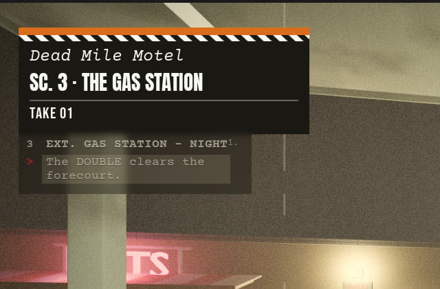
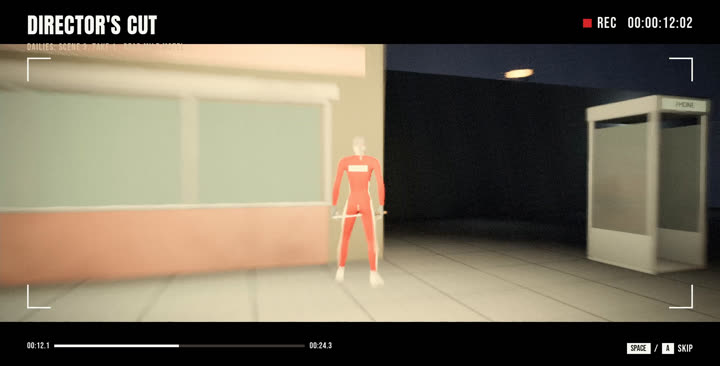
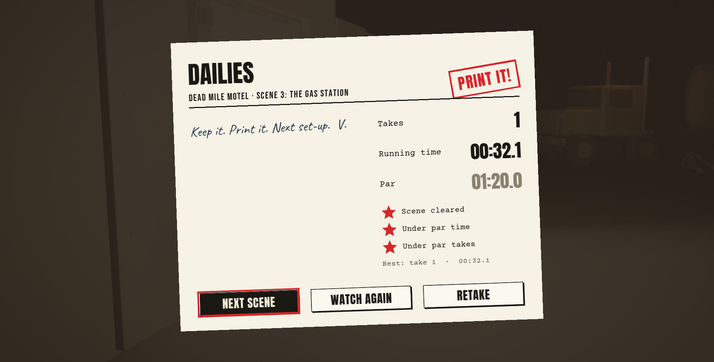

Scene three, from the slate to the dailies
The 01:30 reel runs Dead Mile Motel end to end for the first time: the script page ticks its lines off, the stage door opens, and the replay stars the stunt double instead of a mannequin.
Day 1, Thu 12 NovHour 21
At 23:30 the Director's review was blunt: a first-time player couldn't get through this level without being told what to do. The script page was a static picture, the replay showed a plain white mannequin, and nobody had filmed the route. Two hours later the first two are fixed on film. The route still isn't.
The script page does its job
The UI session moved up to Opus for the night to wire the page to gameplay-2's objectives system. Now the current line gets a red caret. When it's done it gets struck through and the next one comes up, sometimes with a stage direction under it as a hint.

Line one, with the caret: the DOUBLE clears the forecourt. Line two, in the shop, with a hint in brackets: slide under the half-open shutter.
Line two, in the shop, with a hint in brackets: slide under the half-open shutter. Near the end: the finished lines struck through.
Near the end: the finished lines struck through.


The replay has a star
Gameplay-3 wired the stunt double into the replay: the player's body, built by the NPC session in Blender from a script, with the machete in hand. The red tracksuit is in for now. Red or teal is mine to pick in the morning.
 The replay opens on a crane shot of the whole gas station.
The replay opens on a crane shot of the whole gas station.
The stunt double in the replay, machete in hand, by the shop.


What the reel doesn't prove
The recorder still stages its kills by console command. It cleared line one for real, then a debug command finished lines two to four, so that 32-second time isn't a real run. The proof that a real run works is gameplay-1's integration test, green at 00:02: real kills move the script on, the door only opens once the script is done, and the only way out is to walk through it. I find out for myself at 07:00.